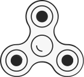

Les Scroll-addicts anonymes
On sait ce que c’est. La honte quand le médecin regarde ton temps d'écran, la peur que le gouvernement détecte ton 50ᵉ prompt de la journée. Mais comment vivre sans la perfusion de dopamine ?
Bienvenue chez les Scroll-addicts anonymes. Ici, on ne te juge pas, on t’offre une simulation de la vie réelle. À quoi ressemble une journée de 24h quand on ne la passe pas à scroller dans le vide ? Plonge dans notre routine et visualise l'impossible: une vie sans hyperconnexion. Reprends le contrôle sur ta vie avant que le système ne le fasse pour toi.
06h00
La vie en ligne
Il est 6h, mon réveil retentit et me fait sursauter. Mon premier réflexe est d’appuyer sur snooze pour prolonger ma nuit. Quinze minutes plus tard, je saute sur mon téléphone pour couper l’alarme, et je jette immédiatement un œil à mes notifications et à des stories. Trente minutes se sont écoulées… il est temps que je me lève si je veux arriver à l’heure en classe.
La vie hors ligne
Il est 6h, tu te réveilles sans stress, sans cette pression de devoir déjà courir après le temps. Le matin tu as le temps de prendre soin de toi. Tu es allé·e te promener pour profiter de la lumière naturelle et prendre un peu l’air. Après cette balade, tu n’as pas la tentation de scroller sur les réseaux sociaux pour regarder la routine des autres avant même de commencer la tienne. Tu as le contrôle de ta matinée, sans être enseveli·e par une avalanche de notifications.
Que dit la science ?
Se réveiller en sursaut est fortement déconseillé: des études montrent que le fait d’être tiré de son sommeil rapidement augmente la pression artérielle et donc expose à un gros risque d’AVC (accidents vasculaires cérébraux) et de crises cardiaques. Enchainer ce choc avec un bombardement de stimulations incessantes et de lumière bleue n’est pas la meilleure idée. Notre cerveau se retrouve déjà attaqué avant même d’avoir fini d’émerger. L’idéal serait de sortir prendre l’air. La lumière naturelle est le signal dont notre corps et notre cerveau ont besoin pour se réveiller et se mettre en mode “ON”.
06h00
07h00
La vie en ligne
Il est 7h, je file à la salle de bain. En me regardant dans le miroir, je scrute chaque détail de ma peau. Chaque imperfection diminue mon estime de moi. Pourquoi ma peau n’est pas aussi lisse que celle des influenceuses ?
Il faut que je m’habille mais j’ai rien à me mettre. Je passe 20 minutes à hésiter entre trois tenues sans jamais vraiment être satisfait·e. Si seulement moi aussi je recevais des vêtements chaque semaine…
La vie hors ligne
Il est 7h, tu te prépares dans la salle de bain. Sans l’accès aux réseaux sociaux, ton reflet dans le miroir te plait. Il y a quelques petites imperfections mais elles font partie du quotidien. Puis tu t’habilles, tu as envie de mettre ta nouvelle tenue que tu as achetée. Ta dernière session shopping remonte à un petit temps, mais la semaine passée tu as craqué sur une pièce en vitrine. Fini les achats compulsifs juste parce que ça vient de sortir, tu achètes ce qui te plait réellement et ce qui te correspond.
Que dit la science ?
Être exposé constamment à des apparences physiques et des styles vestimentaires parfaits sur les réseaux sociaux crée une sorte de dysmorphie numérique. C’est-à-dire que notre cerveau finit par croire que les physiques qu’il voit en ligne sont la norme et que ceux dans la réalité ne sont pas normaux. Arrêter les réseaux sociaux nous permet d’apprendre à notre cerveau à s’habituer à nouveau à la beauté des physiques de la réalité.
07h00
08h00
La vie en ligne
Il est 8h, je viens de passer 1h à me préparer et me reluquer dans tous les coins, je pense que je vais sauter le petit déjeuner. C’est ce que mon influenceur·euse préféré·e a conseillé dans ces dernières stories pour avoir une taille fine comme elle·lui. Au moins ça me permet de rattraper mon retard à cause de mon temps de scroll de ce matin.
La vie hors ligne
Il est 8h, une grosse journée de cours t’attend. Tu as besoin de force, donc tu files prendre ton petit déjeuner. Tu essaies qu’il soit le plus équilibré possible pour qu’il te donne les apports énergétiques dont tu as besoin pour pouvoir être en forme et attentif·ve. Comme tu as le temps, tu peux déjeuner en pleine conscience, en savourant ton plat.
Que dit la science ?
Notre morphologie dépend principalement de facteurs génétiques. Chaque être humain a une morphologie différente en fonction de sa génétique, sa structure osseuse, sa répartition des graisses et des muscles, ses hormones, son alimentation, son activité physique… Copier les habitudes de vie d’une personne ne permet pas d’obtenir le même physique que celle-ci. Notre corps a besoin qu’on l’alimente correctement. Sauter un repas, surtout le petit déjeuner, n’aide pas à la perte de poids. D’ailleurs cela provoque souvent l’inverse: la privation met notre corps en mode survie, il va donc stocker plus au prochain repas pour “si jamais”.
08h00
09h00
La vie en ligne
Il est 9h, le cours vient à peine de commencer mais je m’ennuie déjà, je scroll sur TikTok. Je ne sais pas ce que dit la·e prof, mais la vie des autres sur les réseaux est bien plus intéressante en tout cas. Si au moins on pouvait mettre le cours en x2, ça irait plus vite. Là, la·le prof parle trop lentement pour que je reste captivé·e.
La vie hors ligne
Il est 9h, la·le prof vient d’annoncer le sujet du cours d’aujourd’hui, c’est un nouveau chapitre. Tu vas pouvoir apprendre des nouvelles choses en étant pleinement attentif·ve. Tu écoutes, tu prends note, tu poses des questions, tu comprends… le temps passe beaucoup plus vite !
Que dit la science ?
Notre téléphone rend la concentration difficile car il stimule le cerveau de façon excessive. Cette stimulation libère de la dopamine, l’hormone du plaisir, ce qui nous rend dépendants de ce niveau de stimulation. Aujourd’hui, la capacité d’attention moyenne d’un adulte est de seulement huit secondes, plus courte que celle d’un poisson rouge.
09h00
11h00
La vie en ligne
Il est 11h, je commence à avoir vraiment faim. J’ai pas pu résister à la vue du distributeur automatique. J’ai pris une barre chocolatée et une galette, le tout pour 4,30€.
La vie hors ligne
Il est 11h, tu commences à avoir faim. Heureusement, ce matin, comme chaque matin, tu avais prévu le coup en prenant une collation. Tu manges ton fruit et une barre de céréales pour te requinquer jusqu'à l'heure de midi.
Que dit la science ?
Le Latte Factor est un concept théorisé par David Bach. Acheter un café au lait le matin en allant travailler, acheter un sandwich sur le temps de midi ou prendre une collation au distributeur, selon lui, toutes ces choses font partie des petites dépenses quotidiennes qui ralentissent nos capacités à économiser. Chaque mois, notre portefeuille est impacté par des dépenses invisibles, surtout dues à nos habitudes de consommation.
11h00
13h00
La vie en ligne
Il est 13h, je viens de finir de diner. J’ai été acheter un sandwich car j’ai pas eu le temps de me préparer quelque chose ce matin. Je l’ai mangé en moins de 10 minutes, je mourrais de faim sans avoir déjeuné ! Je tapote sur mon téléphone, je viens de gagner une partie sur mon jeu préféré et regarde les dernières stories. J’ai la flemme de retourner en cours…
La vie hors ligne
Il est 13h, tu as fini de manger avec tes ami·es. Vous venez de faire une partie d’un jeu de cartes et tu l’as gagnée. Vous profitez du soleil tout en papotant, pas une notification pour briser le fil de la discussion. Vous vous racontez vos dernières anecdotes de vie avant de retourner en cours.
Que dit la science ?
La présence d’un téléphone sur la table pendant une conversation peut diminuer la qualité de celle-ci, qu’il soit utilisé ou non. La vue de cet objet agit comme une interférence mentale qui baisse la qualité des échanges et la profondeur des discussions. Sa présence nuit à l’empathie, à l’écoute et aux connexions entre les personnes car le cerveau reste attentif à la possibilité d'une notification.
13h00
15h00
La vie en ligne
Il est 15h, mon téléphone est sur le banc caché sous le cahier. Le vibreur est activé, l’écran qui s’allume à chaque notification. J’essaie d’être attentif·ve au cours mais je suis perturbé·e toutes les 3 minutes.
La vie hors ligne
Il est 15h, tu continues de prendre note du nouveau chapitre. Ton téléphone est sur silencieux dans le fond de ton sac car tu as besoin de toute ton attention pour comprendre les notions complexes. En plus, tu sais que ça t’aide à enregistrer déjà une grande partie de la matière.
Que dit la science ?
Lorsque notre téléphone nous bombarde de stimulations incessantes, notre cerveau n’a plus d’espace pour penser par lui-même. De plus, notre cerveau n’est pas conçu pour recevoir des notifications en continu et donc de la dopamine en continu, cela crée du stress et de l’anxiété.
15h00
17h00
La vie en ligne
Il est 17h, je rentre des cours. Je suis dans le bus, la musique à fond dans les oreilles. Je viens d’acheter les écouteurs avec la meilleure qualité son sur le marché. Je les ai eus à seulement 200€ au lieu de 229€ grâce au code promo d’un·e influenceur·euse. Heureusement que je les ai, au moins je ne dois pas être sociable avec les autres passagers.
La vie hors ligne
Il est 17h, tu rentres des cours. Tu es dans le bus, vous parlez du cours que vous venez d’avoir avec des camarades de classe. C’était un·e tout·e nouveau·elle prof, donc vous donnez chacun·e votre avis sur sa manière de donner le cours. C’était une chouette journée aujourd’hui, tu as appris plein de nouvelles choses !
Que dit la science ?
Les réseaux sociaux sont devenus omniprésents dans notre quotidien, ils ont profondément modifié nos habitudes de consommation en influençant nos choix et préférences d’achat. Les influenceurs jouent un rôle essentiel dans la consommation moderne en recommandant des produits avec les placements de produits, les collaborations avec des marques et les codes promotionnels exclusifs incitant à l’achat. Ils nous montrent aussi des modes de vie idéaux qui ignorent la crise climatique, cela donne envie de suivre ce même rythme de vie.
17h00
18h00
La vie en ligne
Il est 18h, je suis rentré·e chez moi depuis 45 minutes. Je me suis posé·e cinq minutes dans mon lit pour faire une petite pause et scroller, mais ces cinq minutes ont été plus longues que prévues. Je commence à avoir fort mal à la tête.
La vie hors ligne
Il est 18h, tu es rentré·e chez toi depuis un bon moment. Après avoir rangé ta chambre, tu te lances dans une petite séance de sport pour te défouler de cette journée de concentration.
Que dit la science ?
Pratiquer une activité physique est aussi bon pour le mental que pour le physique. Lorsque l’on en pratique une, le corps libère des hormones, comme l’endorphine, la dopamine ou l’adrénaline, qui aident à diminuer le stress, à avoir une meilleure qualité de sommeil et agissent comme un antidépresseur. Cela permet aussi de prévenir certaines maladies chroniques, d'aider au traitement de nombreuses affections de longue durée (comme le cancer, le diabète, l’obésité) ainsi que des maladies neurodégénératives et psychiatriques.
18h00
19h00
La vie en ligne
Il est 19h, ça fait bientôt 1h que je cherche une idée de recette sur TikTok. Rien ne me donne envie avec ce que j’ai dans mon frigo. J’ai demandé à une IA des suggestions de plats avec ce que j’ai chez moi, mais ça non plus ça ne me plait pas. Je pense que je vais me faire livrer un fast-food, ça ira sûrement plus vite. J’ai vu qu’il y en avait un nouveau qui venait d’ouvrir.
La vie hors ligne
Il est 19h, tu cherches une idée de recette dans le livre que tu as reçu pour ton anniversaire. Tu en voulais un nouveau pour varier un peu tes repas et tester ton airfryer. Une fois le choix fait, tu te mets aux fourneaux avec un podcast en fond. Ce moment cuisine te permet de faire une petite pause avant de faire tes devoirs.
Que dit la science ?
La malbouffe, comme le téléphone, crée une dépendance en créant aussi de la dopamine. Un peu comme quand on consomme de la drogue, les récepteurs neurologiques en réclament sans cesse. Cette consommation, en plus d’être addictive, a des risques pour notre santé mentale. Il y a des risques de développer de l’anxiété ou une dépression. De plus, elle peut rendre idiot, car consommer autant de malbouffe nuit à la plasticité de notre cerveau, ce qui est indispensable à la création de nouveaux souvenirs et à l’apprentissage. Et cette consommation comporte aussi des risques pour notre santé physique. Parmi eux, il y a l’obésité, le diabète de type 2, des problèmes cardiovasculaires, de l’hypertension, du cholestérol…
19h00
21h00
La vie en ligne
Il est 21h, j’ai passé ma soirée à scroller en passant d’un réseau social à l’autre. J’aurais peut-être dû faire mes devoirs. Est-ce que j’en ai d’ailleurs ? Je ne me souviens plus de ce que la·le prof a dit, je jouais à un jeu à ce moment-là. Je vais demander à un·e ami·e ce qu’iel a noté comme devoirs à faire pour demain.
J’ai un gros travail à faire pour demain. Je vais demander à une IA de le faire pour moi, ça ira plus vite. Je comprends pas la moitié de ce qu’elle écrit mais au moins il sera fait. Je pourrai me coucher tôt.
La vie hors ligne
Il est 21h, tu viens de finir un travail que tu avais à faire pour demain. Tu es content·e parce que tu as compris facilement les consignes vu que tu as écouté les explications de la·le prof et que tu en as pris note. C’était un gros travail, heureusement que tu l’avais déjà commencé depuis quelques jours. Ça t’a permis de faire des recherches approfondies et de comprendre ce que tu écrivais. Tu es fier·e de toi car en plus tu vas pouvoir aller dormir tôt.
Que dit la science ?
Un apprentissage correct se fait en 3 étapes. La théorie, la phase dans laquelle notre cerveau encode l’information en créant un réseau électrique entre le cortex préfrontal (la mémoire vive qui gère la concentration et le raisonnement) et l'hippocampe (celui qui encode les nouvelles informations). Ensuite, la pratique en réalisant des exercices. Cela force le cerveau à aller rechercher l’information stockée. Le cerveau va mobiliser les ganglions de la base pour transformer l’effort en automatisme jusqu’à ce que ça devienne naturel. Et pour finir, nous avons besoin d’une troisième étape pour ne pas enregistrer des erreurs, c’est la métacognition. Grâce au signal d'erreur de prédiction lié à la dopamine, le cerveau ajuste ses connaissances et affine sa méthodologie. Mais en ayant recours à l’IA, nous sautons l’étape de la pratique et nous nous rendons petit à petit dépendants de cette méthode et donc débiles aussi.
21h00
22h00
La vie en ligne
Il est 22h, je me suis posé·e devant une série pour prendre un petit moment pour moi. J’enchaine les épisodes sans vraiment tout suivre parce que je scroll en même temps sur TikTok.
La vie hors ligne
Il est 22h, tu lis un livre qu’un·e ami·e t’a conseillé. Tu n’as pas l’habitude de lire ce genre d’histoire mais il est super chouette. Tu finis ton chapitre, puis tu files dormir pour être en forme pour demain.
Que dit la science ?
La lumière bleue des écrans perturbe notre cerveau en bloquant la production de mélatonine, l’hormone qui prépare à dormir. En plus de la lumière bleue, les jeux vidéo et les réseaux sociaux stimulent notre cerveau en libérant de la dopamine, ce qui nous incite à continuer à scroller pour renouveler ce sentiment de satisfaction. Pour un meilleur sommeil, il faudrait éteindre les écrans au moins une heure avant de se coucher.
22h00
02h00
La vie en ligne
Il est 2h du matin, mes yeux peinent à rester ouverts. Il est grand temps que je coupe mon téléphone et que j’aille dormir. Je n’ai pas vu le temps passer, j’étais focus sur les vidéos que je regardais.
La vie hors ligne
Il est 2h du matin, tu dors profondément. Tu as su t’endormir rapidement parce que tu as coupé les écrans plus tôt avant d’aller au lit.
Que dit la science ?
Beaucoup d’adolescents et d’étudiants dorment moins de 7h par nuit alors que nous avons besoin idéalement de huit à dix heures de repos. Ce qui signifie presque une nuit de sommeil perdue chaque semaine ! Et ce manque de sommeil s’accompagne souvent d'un état de somnolence et de mauvaise humeur. De plus, le sommeil perdu ne se rattrape jamais complètement. Il est préférable de garder un rythme régulier (qui peut varier d’une heure les jours de congé) plutôt que d’accumuler de la fatigue et d’essayer de la rattraper en se levant à 14h le week-end.
02h00
La boite à outils des S.A.A
Commencer la détox
-
1
L'annonce
Ne te cache pas, la volonté de s’en sortir est très souvent applaudie par ceux qui nous entourent.
Alors annonce-le à ton entourage. Tu recevras de la bienveillance et des félicitations qui t’encourageront à continuer.
-
2
Tout en gris
Dans les réglages de ton smartphone, change les couleurs de l’écran en nuances de gris. En noir et blanc, tu n’auras plus de pics de dopamine et tu perdras l’envie de scroller.
-
3
Stop aux notifications
Désactive toutes les notifications (sauf les appels d’urgence).
Il ne faut plus que ton attention soit perturbée par celles-ci. Le but est que tu ne sois plus interpellé·e par ton smartphone mais que tu le consultes de toi-même.
-
4
La règle des 10 minutes
Quand tu ressens le besoin d’ouvrir un réseau social ou d’écrire un prompt, lance un minuteur de 10 minutes (idéalement sur une montre). Si ton envie est toujours présente au bout des 10 minutes, alors vas-y. Dans la plupart des cas, ta pulsion aura disparu.
-
5
Un temps défini
Dans les réglages de ton smartphone, définis un temps d’écran maximum et laisse une personne de ton entourage choisir le code. Comme ça, une fois le temps écoulé, tu ne pourras pas prolonger.
Le gouvernement recommande de viser maximum 45 minutes de temps d’écran par jour.
-
6
Au revoir les applications
Désinstalle les réseaux sociaux et tes comptes sur les IA. Garde uniquement ce qui est nécessaire (appels, SMS, outils de travail). Si tu dois faire une recherche, force-toi à la faire sur un navigateur de recherche et à ne pas lire la réponse automatique de l’IA.
Kit de survie
-

Un bloc note
Un bloc note:
Pour écrire votre parcours et vos pensées parasites
-

Un fidget
Un fidget:
Pour occuper tes mains autrement
-

Un dumbphone
Un dumbphone:
Pour éviter tout risque de rechute
-

Un livre
Un livre:
Pour te changer les idées quand tu t’ennuies et réapprendre à aimer les stimulations lentes
-
Une montre
Une montre:
Pour regarder l’heure sans être tenté de scroller
Témoignages
-
Perrine — 32 jours de sobriété
"Quand j'ai posé mon smartphone sur le bureau de mon patron pour lui dire que je partais en clinique de sevrage, j'ai cru qu'il allait me renvoyer pour inaptitude. À la place, il m'a serré la main et m'a dit qu'il était fier de moi. Le regard des autres change quand on assume de se soigner. Aujourd'hui, je respire.”
-
Sophie — 427 jours de sobriété
"Les premiers jours, je pleurais tout le temps. C'est ma fille qui m'a aidée à tenir. À chaque crise de dumbscroll, elle m'apportait mon fidget. Sortir de l'ombre m'a sauvé la vie. N'ayez pas peur d'avouer que vous êtes malade, les gens veulent vous aider à guérir.”
-
Jules — 21 jours de sobriété
"J'ai failli craquer ce matin dans le bus. Ma main cherchait frénétiquement un écran. La dame à côté de moi l'a remarqué. Elle m'a tendu son journal papier avec un sourire compatissant. J'ai lu la page météo pendant 20 minutes pour calmer mon rythme cardiaque. L'entraide humaine est notre meilleur remède.”
-
Marc — 112 jours de sobriété
"J'étais à plus de 40 prompts par jour. Je demandais à l'IA de rédiger des messages pour ma propre femme. J'ai fait 3 mois de sevrage en clinique. Hier, j'ai cuisiné un repas de A à Z sans aucun tutoriel vidéo ni écran dans la cuisine. C'était un peu brûlé, mais c'était bon. Courage !”
-
Lily — 264 jours de sobriété
”Les premières semaines, le manque était difficile. Maintenant, j’apprends à m’ennuyer dans la salle d’attente du médecin. Et vous savez quoi ? Je commence à l'apprécier, cet ennui.”
Conseils pour survivre à la détox
-
La tâche répétitive
Le cerveau addict a besoin de boucles. Trompe-le avec une activité manuelle: tricote, sculpte, fais du jardinage, fais des origamis.
-
Le test du banc
Assieds-toi sur un banc public. Ne fais rien d'autre que d'observer les passants et ce qui t’entoure. Réapprends à ne rien faire et à laisser ton cerveau respirer.
-
Top chef
Prépare un repas en utilisant uniquement des livres de recettes. Invite tes ami·es pour passer une soirée déconnectée.